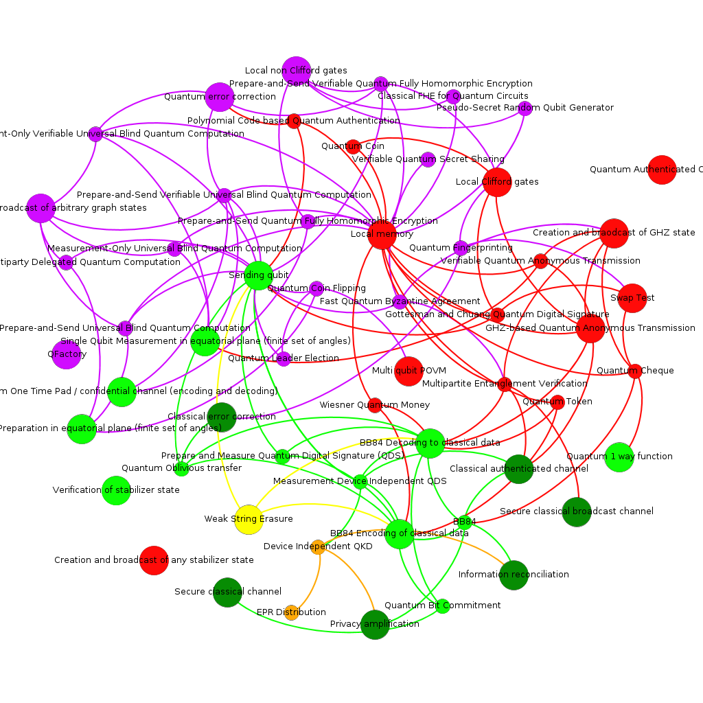

Quantum Internet Alliance M4.2: List of atomic tasks
1 Purpose
Application level protocols need to have access to networking services such as entanglement sharing between any two points of the network. While such service is at the heart of the quantum internet architecture, additional functionalities can be required or just convenient to have for better, faster, wider development of application level protocols.
The purpose of this report is to review a wide range of such protocols searching for atomic repeatable functions while categorising them along several dimensions. By doing so, we aim at providing building blocks that:
- lessen the amount of code and control needed while developing applications for the quantum internet (in particular through code reuse);
- allow benchmarking of the nodes and network capabilities against these tasks;
- provide functionalities with sound cryptographic definitions;
- provide a simulation platform where these functions would already be implemented, to further accelerate the creation cycle of quantum protocols.
2 Methodology
- Review of the quantum protocol zoo looking at the various protocols;
- Identify and group candidate atomic functions;
- Categorising various candidates into network stages, type (quantum internet layer attribution, off-layer), and necessity
- Integration into protocol zoo's knowledge graph
3 Review of the quantum protocol zoo
| Protocol | Functionalities used |
|---|---|
| GHZ-based Quantum Anonymous Transmission | Classical authenticated channel |
| https://arxiv.org/abs/quant-ph/0409201 | Creation and braodcast of GHZ state |
| Classical collision detection protocol | |
| Single qubit measurement | |
| Single qubit Hadamard gate | |
| Local memory | |
| Teleportation | |
| Verifiable Quantum Anonymous Transmission | Notification (private computation of classical parity, OR, Rand) |
| https://arxiv.org/pdf/1811.04729.pdf | Single qubit measurements in the equatorial plane |
| Local memory | |
| (Uses GHZ anonymous transmission as subroutine) | |
| Polynomial Code based Quantum Authentication | Clifford circuits (error correction) |
| https://arxiv.org/pdf/quant-ph/0205128.pdf | Local memory |
| Fast Quantum Byzantine Agreement | Creation and braodcast of GHZ state |
| https://dl.acm.org/doi/10.1145/1060590.1060662 | Multipartite Entanglement Verification |
| (Uses oblivious common coin) | |
| (Uses Verifiable Quantum Secret Sharing) | |
| Quantum Bit Commitment | BB84 Encoding of classical data |
| https://arxiv.org/abs/1108.2879 | BB84 Decoding to classical data |
| Secure classical channel | |
| Fast operations to keep the relativistic constraints | |
| Quantum Coin Flipping | \(\pi/9\) single qubit preparation |
| https://arxiv.org/abs/quant-ph/9904078 | Multi qubit POVM |
| Gottesman and Chuang Quantum Digital Signature | Local memory |
| https://arxiv.org/abs/quant-ph/0105032 | Swap test |
| Stabilizer states creation | |
| Prepare and Measure Quantum Digital Signature (QDS) | BB84 Encoding of classical data |
| https://arxiv.org/abs/1403.5551 | BB84 Decoding to classical data |
| Measurement Device Independent QDS | Classical authenticated channel |
| https://arxiv.org/pdf/1704.07178.pdf | Measurement Device Independent QKD link |
| BB84 Encoding of classical data | |
| BB84 Decoding to classical data | |
| Multipartite Entanglement Verification | Classical authenticated channel |
| https://www.nature.com/articles/ncomms13251 | Secure classical broadcast |
| Common shared randomness | |
| Local memory | |
| BB84 Decoding to classical data | |
| Creation and braodcast of GHZ state | |
| Quantum Fingerprinting | Clifford gates |
| https://arxiv.org/abs/quant-ph/0102001 | Swap test |
| BB84 | BB84 Encoding of classical data |
| https://core.ac.uk/download/pdf/82447194.pdf | BB84 Decoding to classical data |
| Authenticated classical channel | |
| Privacy amplification | |
| Information reconciliation | |
| Device Independent QKD | EPR distribution |
| https://arxiv.org/abs/1811.07983 | Information reconciliation |
| Privacy amplification | |
| Quantum Leader Election | (Uses Weak coin flipping) |
| https://arxiv.org/abs/0910.4952 | |
| Quantum Cheque | Creation and braodcast of GHZ state |
| https://link.springer.com/article/10.1007/s11128-016-1273-4 | Local memory |
| Quantum 1-way function | |
| SWAP test | |
| (Uses QKD) | |
| Quantum Coin | Clifford gates |
| http://users.math.cas.cz/~gavinsky/papers/QuMoClaV.pdf | Local memory |
| Quantum Token | BB84 Encoding of classical data |
| BB84 Decoding to classical data | |
| Local memory | |
| Wiesner Quantum Money | BB84 Encoding of classical data |
| http://users.cms.caltech.edu/~vidick/teaching/120_qcrypto/wiesner.pdf | BB84 Decoding to classical data |
| Local memory | |
| Quantum Oblivious transfer | BB84 Encoding of classical data |
| https://link.springer.com/chapter/10.1007/3-540-46766-1_29 | BB84 Decoding to classical data |
| Classical FHE for Quantum Circuits | Full QC |
| https://arxiv.org/abs/1708.02130 | |
| Measurement-Only Universal Blind Quantum Computation | Graph state generation |
| https://journals.aps.org/pra/abstract/10.1103/PhysRevA.87.050301 | Equatorial plane measurements |
| Prepare-and-Send Quantum Fully Homomorphic Encryption | Full QC (server) |
| https://arxiv.org/abs/1603.09717 | Quantum OTP (client) |
| Prepare-and-Send Universal Blind Quantum Computation | Graph state generation |
| https://arxiv.org/abs/0807.4154 | Equatorial plane measurements |
| Pseudo-Secret Random Qubit Generator | Full QC on server's side |
| https://arxiv.org/abs/1802.08759 | Quantum-safe one-way functions |
| Prepare-and-Send Verifiable Universal Blind Quantum Computation | Graph state generation |
| https://arxiv.org/abs/1203.5217 | Equatorial plane measurement |
| Quantum One Time Pad | |
| Local memory | |
| Measurement-Only Verifiable Universal Blind Quantum Computation | Graph state generation |
| https://arxiv.org/abs/1208.1495 | Equatorial plane measurement |
| Local memory | |
| Prepare-and-Send Verifiable Quantum Fully Homomorphic Encryption | Full QC (server) |
| https://arxiv.org/abs/1708.09156 | Clifford QC (client) |
| Secure Multiparty Delegated Quantum Computation | Graph state generation |
| https://arxiv.org/abs/1606.09200 | Verifiable secret sharing |
| State Teleportation | EPR state source and broadcasting |
| https://doi.org/10.1103/PhysRevLett.70.1895 | BB84 Decoding to classical data |
| Weak String Erasure | BB84 Encoding of classical data |
| https://eprint.iacr.org/2005/291.pdf | BB84 Decoding to classical data |
4 Task extraction and categorisation
The table below presents the extracted tasks from the protocols listed above. Each task is categorized in the layer model of quantum networks (ie. Physical, Layer, Network, Transport, Session, Presentation, Application or Off layer). The Network stage is also specified for each of these atomic functions (ie. in increasing complexity starting from trusted repeaters, entanglement distribution, quantum memory and quantum computing).
| Function | Layer | Network stage | Comments |
|---|---|---|---|
| Sending qubit | Transport | Trusted repeater | Should be provided by a Transport layer |
| Teleportation protocol | Transport | Entanglement distribution | Should be provided by a Transport layer |
| Creation and braodcast of GHZ state | Session | Quantum memory | Often core for multiparty protocols |
| Creation and broadcast of any stabilizer state | Session | Quantum memory | Often core for multiparty protocols |
| Creation and broadcast of arbitrary graph states | Session | Quantum computing | Often core for multiparty protocols |
| Quantum One Time Pad / confidential channel (encoding and decoding) | Presentation | Prep. & meas. | Core |
| BB84 Encoding of classical data | Presentation | Prep. & meas. | Core |
| BB84 Decoding to classical data | Presentation | Prep. & meas. | Core |
| Single Qubit Preparation in equatorial plane (finite set of angles) | Presentation | Prep. & meas. | Core |
| Single Qubit Measurement in equatorial plane (finite set of angles) | Presentation | Prep. & meas. | Core |
| Multi qubit POVM | Presentation | Quantum memory | Assess usefulness / code repetition avoidance |
| Local Clifford gates | Off | Quantum memory | Core |
| Local memory | Off | Quantum memory | Core |
| Local non Clifford gates | Off | Quantum computing | Core |
| Verification of stabilizer state | Off | Quantum memory | Not atomic but useful to avoid code repetition |
| QFactory | Off | Quantum computing | Core |
| Swap Test | Off | Quantum memory | Core |
| Information reconciliation | Off | Classical | Core if throughput is important / not atomic but useful to avoid code repetition |
| Classical error correction | Off | Classical | Core if throughput is important / not atomic but useful to avoid code repetition |
| Privacy amplification | Off | Classical | Core if throughput is important |
| Secure classical broadcast channel | Off | Classical | Core if protocol needs speed / low latency |
| Classical authenticated channel | Off | Classical | Core if protocol needs speed / low latency |
| Quantum 1 way function | Off | Prep. & meas. | Not atomic but useful to avoid code repetition |
| Anonymous transmission channel | Session | Quantum memory | Not atomic but useful as building block |
| Quantum Authenticated Channel | Session | Quantum memory | Not atomic but useful as building block |
| Weak String Erasure | Transport | Trusted repeater | Not atomic but useful as building block |
5 Tasks specifications
5.1 Sending qubit
This functionality should be provided at the transport layer for entanglement sharing networks. It would be at the link layer for networks based on direct transmission of quantum informaton (QKD-like networks).
For a transport layer functionality, it is expected to provide reliable service with flow control (allowing the sender to improve its probability of correct transmission by detecting possible congestion at the receiving end or along the way).
| Inputs | Outputs |
|---|---|
| Source node: Qubit or Qubits block | Source node: ACK and Flow Control - Congestion Control Message / ERR or ERR Message |
| Source node: Target node ID | Target node: Qubit or Qubits block |
| Source node: Metadata | Target node: Qubit ID or Qubits ID block, Source node ID, Additional Qubit or Qubit block metadata |
5.2 Teleportation halves
While teleportation is the heart of the transport layer in entanglement sharing networks, it is useful to have each half of the protocol available directly to the programmer as a way to teleport while quantum one time padding information. This is especially useful in measurement based quantum computation for blindness and verification. In this case, teleportation measurement is performed, but the sender does not send the corrections to the receiver.
5.2.1 Sending half
| Inputs | Outputs |
|---|---|
| Source node: Qubit or block of Qubits | Source node: Corrections or block of corrections |
| Target node: Uncorrected qubit or block of uncorrected qubits |
Correction sending and metadata sending is left up to the Source node as protocols might require a full flexibility over what is sent (or not sent).
5.2.2 Receiving half
| Inputs | Outputs |
|---|---|
| Target node: Corrections or block of corrections | Target node: Corrected Qubit or block of Qubits |
The receiving half can be replaced by a quantum One-Time-Pad encoding / decoding with a proper labelling of the corrections.
5.3 Creation and braodcast of GHZ state
GHZ states are central to several multi-party protocols. Several implementations can be proposed:
- either a centralized create and broadcast operation using a regular transport layer,
- or tapping directly into the network layer for using bipartite entanglement as a way to generate the GHZ state in a decentralized fashion.
The first option would yield two atomic sub-tasks, while the latter would involve a protocol on its own.
5.3.1 Local prepare
| Inputs | Outputs |
|---|---|
| Number of parties | N-Party GHZ state |
5.3.2 Broadcast
| Inputs | Outputs |
|---|---|
| Source node: N-qubit register | Source node: ACK and Flow Control - Congestion Control Messages / ERR or ERR Message |
| Source node: length-N Target node IDs | Per Target node : Qubit |
| Source node: Additional constraints (eg. TTL) | Per Target node: Qubit ID, Source node ID, metadata |
| Source node: Overall state metadata |
5.4 Creation and broadcast of any stabilizer state
Specifications similar to GHZ state creation and broadcast.
5.5 Creation and broadcast of arbitrary graph states
Specifications similar to GHZ state creation and broadcast.
5.6 Quantum One Time Pad / confidential channel (encoding and decoding)
Encoding and decoding are identical, yielding a single atomic task that is entirely performed locally. The "send" part can be performed using the send qubit atomic function and would yield a confidential quantum channel. It can also be implemented directly via teleportation without revealing the corrections.
| Inputs | Outputs |
|---|---|
| Block of qubits | Block of encoded qubits |
| Block of encoding key (ie 2 bits per qubit specifying X and Z rotations) |
5.7 BB84 Encoding of classical data
One of the most useful encoding, it is used in many protocols and is also helpful in unit-testing the library itself. This would be naturally embedded in a slightly more general preparation functionality where all 6 states that are eigenstates of Pauli operators can be prepared at will.
| Inputs | Outputs |
|---|---|
| Block of classical data bits | Prepared block of qubits |
| Block of encoding bases |
5.8 BB84 Decoding to classical data
Same reason. Symmetric functionality.
| Inputs | Outputs |
|---|---|
| Block of qubits | Decoded block of classical bits (measurement outcomes given the measurement bases) |
| Block of encoding bases |
5.9 Single Qubit Preparation in equatorial plane (finite set of angles)
Useful in the context of measurement based quantum computing. A natural set of preparation angles is \(\{\frac{k\pi}{4}\}_{0\leq k \leq 7}\) as it is widely used in measurement based quantum computing schemes. Other angles could be optionally considered.
| Inputs | Outputs |
|---|---|
| Block integers specifying the preparation angle | Block of prepared qubits |
| Block of bits (to apply \(+\pi\) to the preparation) | |
| Option: list of preparation angles, defaults to \(k\pi/4\) |
5.10 Single Qubit Measurement in equatorial plane (finite set of angles)
Same reason. Symmetric functionality.
| Inputs | Outputs |
|---|---|
| Block integers specifying the measurement angles | Block of classical bits (measurement outcomes given the measurement angles) |
| Option: list of measurement angles, defaults to \(k\pi/4\) |
5.11 Multi qubit POVM
While it is not possible to allow the implementation of generic POVM's even on a few qubits, some should be available readily as atomic functions. A possibility would be to allow for POVM's obtained as observables defined by stabilizer measurements as it would allow completing basic quantum error correcting schemes.
| Inputs | Outputs |
|---|---|
| N-qubit state | bit (measurement outcome associated to the projectors onto the \(\pm 1\) eigensubspaces of \(P\) |
| Length-N Pauli operator \(P\) |
5.12 Local Pauli gates
Necessary. Mostly provided by the backend it self.
| Inputs | Outputs |
|---|---|
| Qubit | Rotated qubit |
| Pauli operator |
5.13 Local Clifford gates
Same as previous functionality.
5.14 Local non Clifford gates
Most backends or hardware provide the ability to perform \(T\) gates. These will serve as building blocks for distillation schemes before being used in real circuits. Same specification as the previous functionality.
5.15 Local memory manager
The idea behind this functionality is to be able to handle various scenario influencing the robustness of protocols, such as being able to tell neighboring nodes that the capacity to accept new qubits is low before they actually send information. It might also be interesting to be able to keep track of the time to live of various qubits so that other parts of the protocols can take that into account and give higher priority to operations with a lower TTL.
The implementation of such functionality can be done in various ways and will highly depend on the backend and chosen architecture.
| Inputs | Outputs |
|---|---|
| nil | Available capacity for reciving or creating new qubits |
| Optionally active qubit ID and their remaining TTL |
5.16 Multi-site verification of stabilizer state
This allows verified multiparty protocols. It also enters into unit testing for multi-party operations.
5.16.1 Verifier side
| Inputs | Outputs |
|---|---|
| Length-N Prover node ID's | GOK / NOK |
| Qubit ID's per prover node | Accepted qubit-ID per Prover node |
| Stabilizer state description |
5.16.2 Prover side
| Inputs | Outputs |
|---|---|
| Qubit IDs | list of measured outcomes |
| List of measurements to perform |
5.17 QFactory
Blind remote preparation of a classical described quantum state.
| Inputs | Outputs |
|---|---|
| Client node: classical description of the quantum state | Server node: quantum state |
| Client: classical bit spceifying the computational basis for the prepared state |
5.18 Swap Test
Implies to add the swap gate first and then the test. It should work indistinctively for individual qubits and blocks of qubits. The returned classical bit corresponds to a single measurement outcome (ie the test needs to be repeated to get the overlap value between the two tested-states).
| Inputs | Outputs |
|---|---|
| 2 blocks of qubits | classical bit |
5.19 Information reconciliation
Useful for implementations of QKD like protocols. Would offer a template for reconciliation allowing to plugin various error correction schemes.
| Inputs | Outputs |
|---|---|
| Each participating node: Sifted key bits | Each participating node: reconciled key bits |
The parameters would specify:
- the scheme to use for the reconciliation
- the kind of error estimation performed
5.20 Classical error correction
Many protocols require classical error correction at a very fine grained level (be it for exploiting classical code properties in algorithms or to have manual control over some quantum error correction schemes using CSS codes). This entry would be consisting of a sub-library providing encoding, error estimation and decoding procedures as well as code manipulation functionalities. Depending on the use of these codes (either as being used off-line or on-line) they should provide fast implementations (possibly requiring dedicated libraries or even dedicated hardware).
5.20.1 Classical information encoding
| Inputs | Outputs |
|---|---|
| \((n,k)\) code | Length-\(n\) encoded block |
| Length-\(k\) classical bits |
5.20.2 Classical information error estimation and decoding
| Inputs | Outputs |
|---|---|
| \((n,k)\) code | Length-\(k\) decoded bits or quantized probabilities of being \(1\) |
| Length-\(n\) noisy encoded block (bits or quantized continuous value) | Length-\((n-k)\) syndrome values (bits or quantized values) |
| Most likely length-\(n\) error vector |
Additionnal information passed would comprise:
- Noise model
- Input type (bits or quantized values)
- Output type (hard or soft decoding)
- Error estimation strategy
5.20.3 Classical codes manipulation
Series of functions such as:
- Coset sampling
- Dual code encoding and decoding
- Concatenation
- …
These functions might be provided by specialized libraries.
5.21 Quantum error correction
5.21.1 Encoding of quantum information
| Inputs | Outputs |
|---|---|
| \((n,k)\) quantum code | Encoded qubit block |
| Length-\(k\) qubit block |
5.21.2 Stabilizer measurement
| Inputs | Outputs |
|---|---|
| \(n-k\) stabilizer group generators | Length-\((n-k)\) binary vector of measurement outcomes |
| Length-\(n\) qubit block |
5.21.3 Application of error corrections
| Inputs | Outputs |
|---|---|
| Length-\(n\) qubit block | Length-\(n\) qubit block |
| Length-\(n\) vector of Pauli operators |
5.21.4 Transversal logical gates application
| Inputs | Outputs |
|---|---|
| Description of 1 or 2 logical qubit blocks | 1 ou 2 logical qubits blocks |
| 1 or 2 logical qubits gates | |
| 1 or 2 logical qubits blocks |
5.21.5 Logical computational basis measurement
| Inputs | Outputs |
|---|---|
| \((n,k)\) stabilizer code | outcome of the measurement |
| Logical qubit to measure |
5.21.6 Decoding of quantum information
| Inputs | Outputs |
|---|---|
| \((n,k)\) quantum code | Decoded length-\(k\) qubits block |
| Length-\(n\) encoded qubit block |
NB: Here we have made the choice to rely on classical error correction procedure for estimating the most likely error given a noise model. This can be done because quantum codes are classical codes over \(GF(4)\).
5.22 Privacy amplification
Useful for implementations of QKD protocols. Would offer various schemes for privacy amplification
| Inputs | Outputs |
|---|---|
| Insecure shared random key | Secure shared random key |
The scheme would take the following parameters:
- a privacy amplification scheme
- an estimate of the information in the hands of an adversary
5.23 Quantum 1-way function
Used in digital signature schemes and quantum cheques. This function takes a classical bit, a key and outputs a block of qubits that encode the classical bit with the help of a classical key \(k\).
The inputs/outputs is defined in a way similar to the BB84 encoding / equatorial plane encoding
5.24 Channels
Various implementation of quantum and classical channels will be useful as it is common in protocols to require one or several of these. Their precise specification will be depending on the network available to implement them. One constraint needs to be kept in mind: most implementations will be required to have low latency as, even for the case of classical information, it might otherwise mean that qubits containing precious quantum information are at risk of decoherence.
The Flow control and Congestion control messages available for sending qubits and blocks of qubits will need to be adapted to theses channels.
List of channels to implement:
- Secure classical broadcast channel
- Specific implementation could be required for high precision timing reasons.
- Classical authenticated channel
- Quantum anonymous transmission channel
- Quantum Authenticated Channel
5.25 Weak String Erasure
This protocol can be seen as a purposedly imperfect transport protocol. It is thus categorized in the transport layer and should have flow control and congestion control mechanisms.
| Inputs | Outputs |
|---|---|
| Source node: length-N bit string of information to send | Source node: ACK and Flow Control - Congestion Control Message / ERR or ERR Message |
| Source node: length-N bit string of basis choices | Target node: Set of bits and positions where the value coincides with the source information bits |
| Target node: length-N bit string of basis choices |
6 Knowledge graph representation of relations between atomic functions and protocols of the zoo
The knowledge graph presented below contains the various protocols and atomic functions extract from the quantum protocol zoo. The larger nodes are atomic functions, while smaller ones correspond to application level protocols. The color of the nodes correspond to the network stage of the task:
- dark green: classical
- green: prepare and measure
- yellow: trusted repeater
- orange: entanglement distribution
- red: quantum memory
- purple: quantum computing.
This graph clearly shows the (degree-) centrality of BB84 encoding as well as Sending qubit and Local memory functionalities. Less apparent without this graph are the role played by GHZ and graph state preparations. Their importance stems from their usefulness in most delegated quantum computing schemes as well as multipartite protocols. This would call for a specific attention in implementing these functionalities, maybe even considering dedicated network architectures adapted to the production of these resource states.
Here, note that we did not represent possible implementations of atomic tasks. Instead, atomic functions are kept atomic because a single atomic function could be implemented in various ways each using different functionalities (see eg. creation and distribition of GHZ states involving broadcasting EPR pairs vs. local creation and qubit sending). Opting for one implementation against another is not the purpose of this report as flexibility should be in the hands of experimentalists in order for them to optimize the quality of the produced functionality given its input/output specification.
